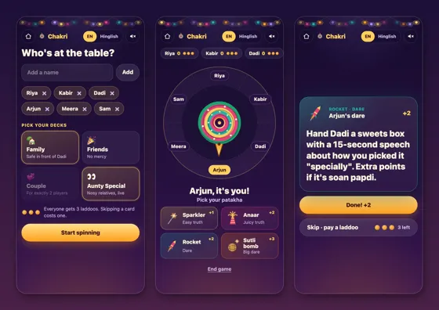
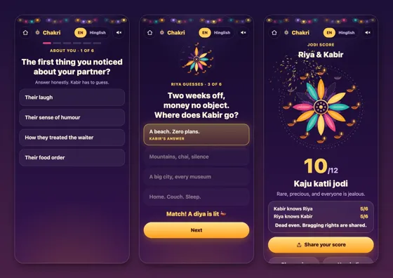
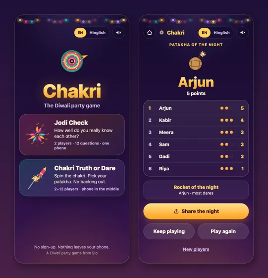
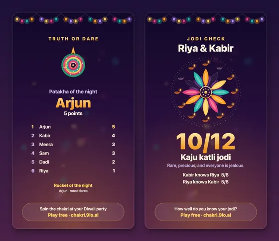
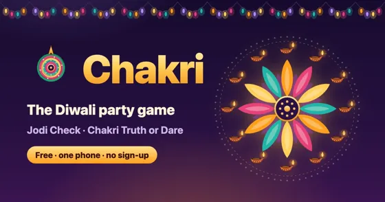

Chakri press kit
Everything here is free to use in coverage of Chakri, and the cards and questions are ours to quote. For anything else, email admin@9io.ai.
Fact sheet
- Game
- Chakri, the Diwali party game
- Play
- chakri.9io.ai, in any phone browser
- Developer
- 9io
- Price
- Free, with no ads and no sign-up
- Released
- 29 October 2026, for Diwali on 8 November
- Languages
- English, with a Hinglish switch
- Players
- Jodi Check: 2. Chakri Truth or Dare: 2 to 12
- Press contact
- admin@9io.ai
Short description
Chakri is a free Diwali party game you play on one phone, in the browser. Jodi Check is a 12-question quiz that shows how well two people really know each other. Chakri Truth or Dare is for 2 to 12 players, with the phone in the middle of the room.
Long description
Chakri is a free Diwali party game you play on one phone, in the browser. Jodi Check is a 12-question quiz that shows how well two people really know each other. Chakri Truth or Dare is for 2 to 12 players, with the phone in the middle of the room.
In Jodi Check, one player answers six questions about themselves in secret, the other guesses each answer, then they swap. Every match lights a diya, and all twelve finish the rangoli. Pick the jodi first: Couple, Siblings, Best friends or Family. In Chakri Truth or Dare you swipe the chakri, it stops on a player, and they pick a patakha, from a Sparkler (an easy truth) to a Sutli bomb (a big dare). Everyone has three laddoos to skip a card with. The decks are Family, Friends, Couple and Aunty Special, for the nosy relatives' questions. There are 82 Jodi Check questions and 176 truth-or-dare cards, each in English and Hinglish, about the social side of Diwali, from sweets and family to the soan papdi box that gets passed from house to house. No dare involves fire, firecrackers, drink or messaging anyone outside the room. Results come as story-sized cards to share on WhatsApp. There's nothing to install and no sign-up, and nothing you type leaves the phone.
Images
Select one to download it at full size, or get all of them in one zip.

Chakri Truth or Dare: setting up players and decks, the chakri stopping on a player, and a dare card
Jodi Check: a couple question, a match lighting a diya, and a 10 out of 12 Kaju katli jodi
The home screen, and the end of a Truth or Dare night with the Patakha of the night
Two result cards to share: the Patakha of the night, and a Kaju katli jodi from Jodi Check
The 1200 × 630 share image: a rangoli of lit diyas and a spinning chakri- The Chakri icon, as a vector file


About 9io
9io is an independent product engineering studio. It builds software for companies as their senior technical team and makes its own products, including the iPhone Duo games Bitfold and Football Kick. More at 9io.ai.